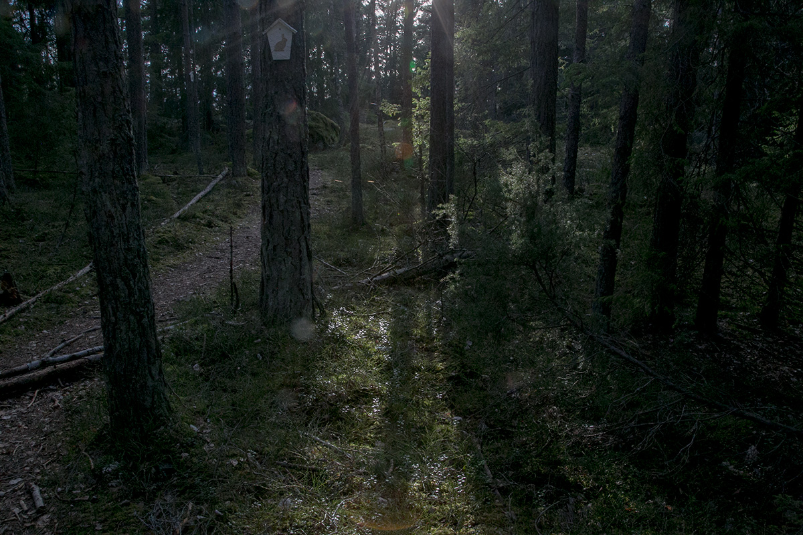
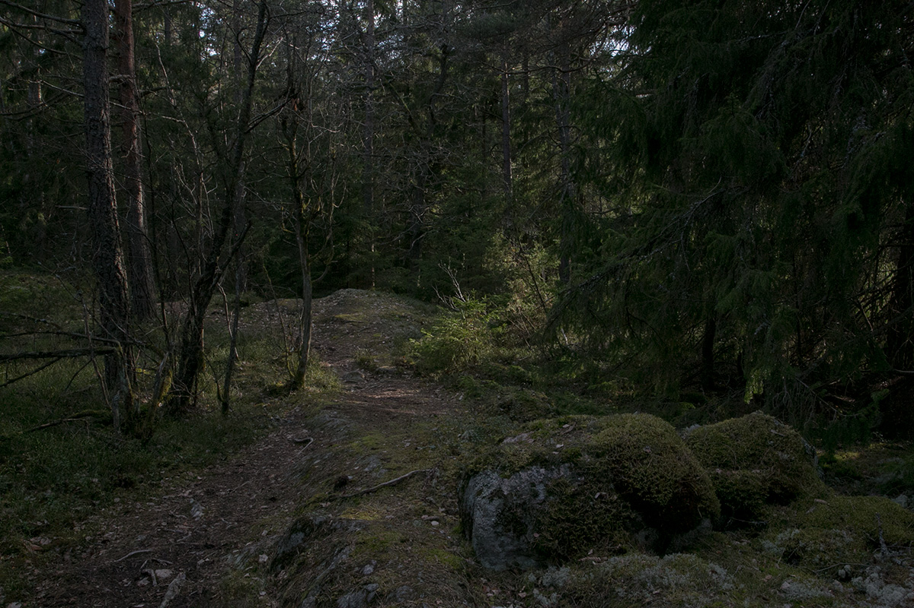
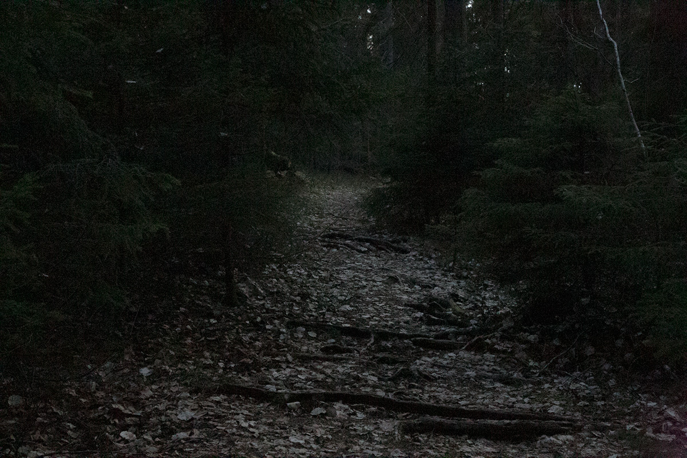
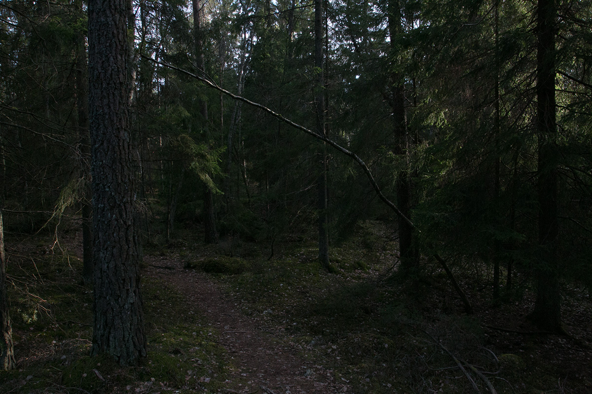
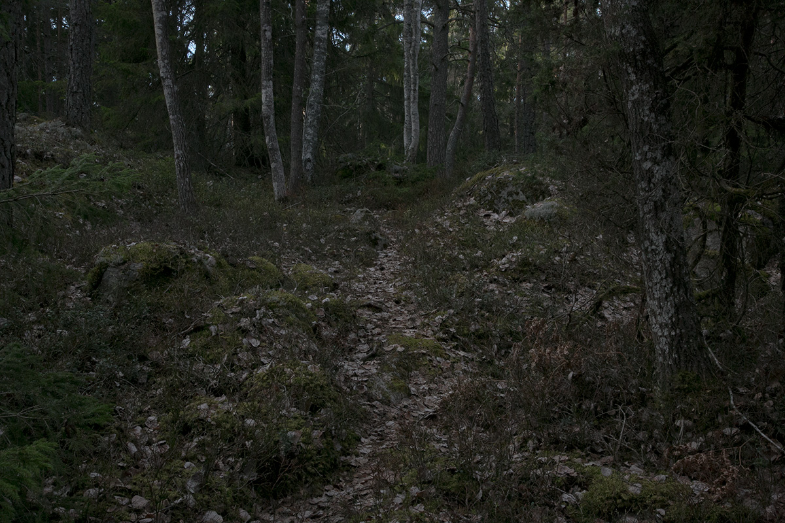
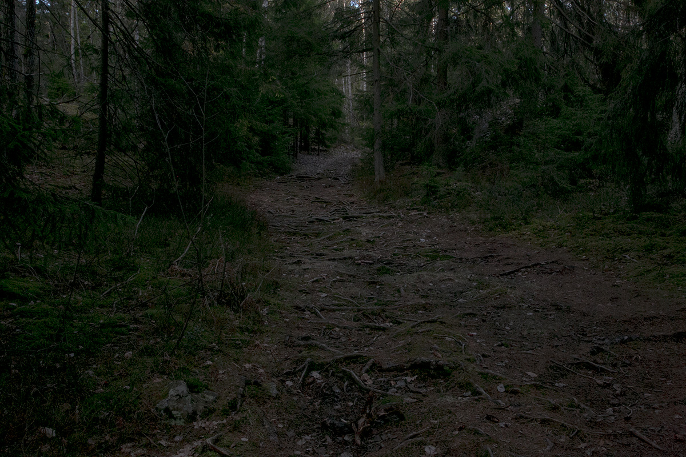
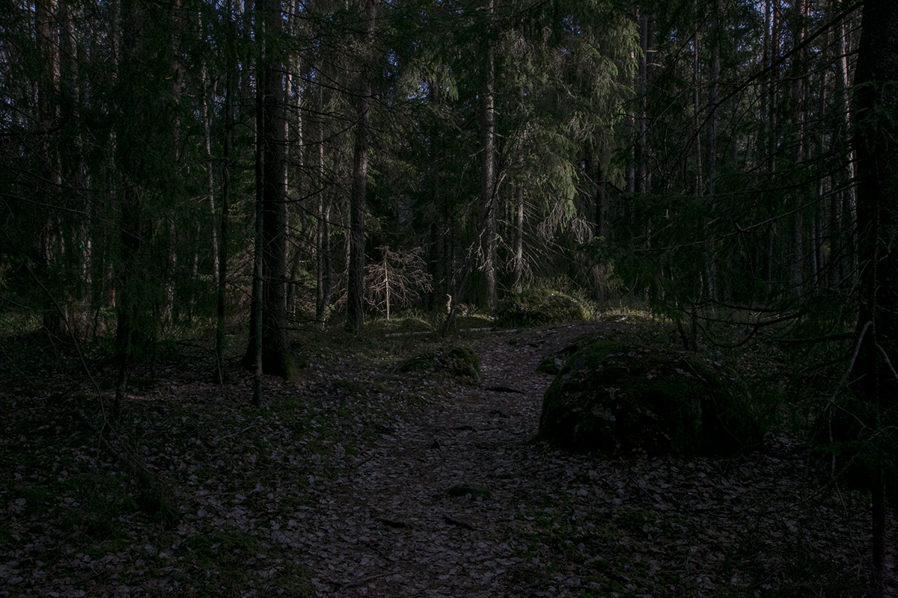
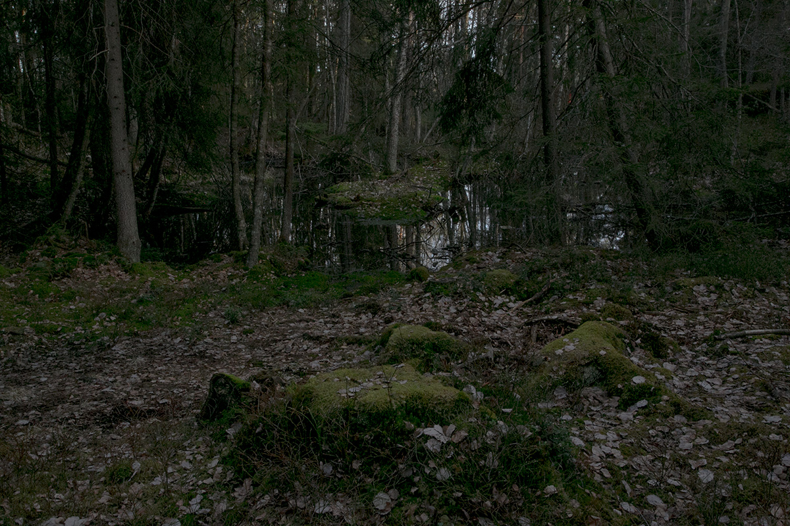
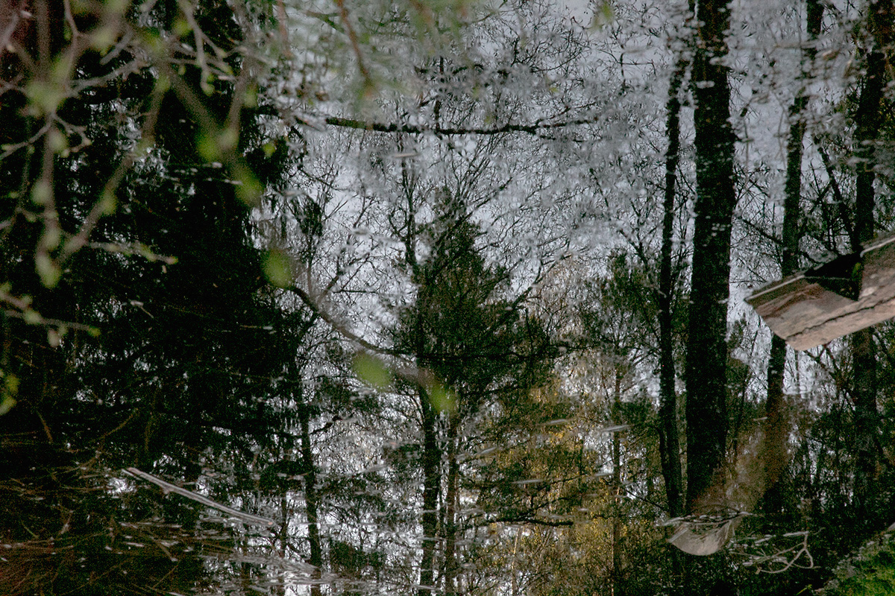

"The hurrier I go, the behinder I get".

"Where should I go? That depends on where you want to end up".
"Imagination is the only weapon in the war against reality".

"It’s no use going back to yesterday because I was a different person then".

"I knew who I was this morning but I’ve changed a few times since then".

"How long is forever? Some times just one second".

"I’m trying to free your mind. But I can only show you the door. You’re the one that has to walk through it."
"To be yourself in a world that is constantly trying to make you something else, Is the greatest accomplishment."

"You aren’t doing it wrong if no one knows what you are doing."
"Those who don’t believe in magic, will never find it."

"Not all who wander are lost."

"Be happy. It drives people crazy".

All texts are from "Alice's Adventures in Wonderland" written by Lewis Carroll.